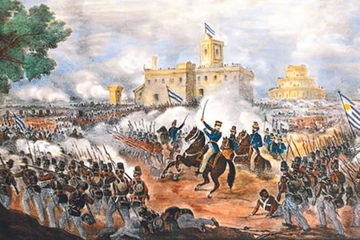
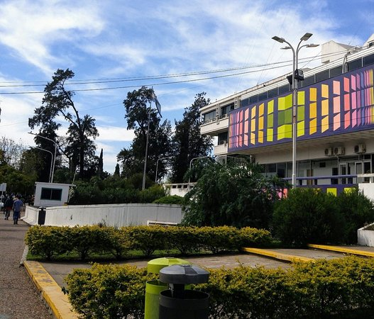

History
These places were the scenes of the battle fought on February 3, 1852 called the Battle of Caseros, where the army commanded by General Urquiza defeated the forces of Juan Manuel de Rosas at that time Governor of Buenos Aires. Due to the date this battle was fought, the district bears the name of Tres de Febrero.
Creation of the Tres de Febrero municipality
In 1958, the deputy Alfredo Longo, a resident of Caseros, presented a project related to the creation of a new municipality called "Caseros", made up of the towns of Santos Places, Ciudadela, Sáenz Peña, El Palomar and Caseros, which until At the time they belonged to General San Martín. On October 15, 1959, Law 6.065 of the Province of Buenos Aires created the district with the name of “Tres de Febrero”, between General Paz Avenue, the Urquiza Railroad tracks, Triunvirato up to the Reconquista River, the Reconquista River to Díaz Vélez and from there to General Paz Avenue. The name Tres de Febrero is due to the fact that on that date in 1852 the battle of Caseros was fought between the forces of Rosas and those of Urquiza. The Municipality of Tres de Febrero began its financial year and with the provision of services in general as of January 1, 1960 in the building located at Lisandro Medina 2161 in Caseros.

Some current information
Population: 95.785
Mayor: Diego Valenzuela
Altitud: 88.19 feet above sea level